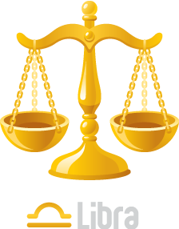

關於我
歡迎來到我的簡介網頁！
我的名字是Youi
請多多指教！
更了解我


我的星座是天秤座
生性樂觀、不喜爭執、凡事講求邏輯和策略但是優柔寡斷、猶疑不定的天秤座
夢想是到處去旅行
從最接近天堂的小島－新喀里多尼亞、物價世界最高－瑞士到洗肺聖地－塔林的不可思議的旅行
歡迎來到我的簡介網頁！
我的名字是Youi
請多多指教！
我的星座是天秤座
生性樂觀、不喜爭執、凡事講求邏輯和策略但是優柔寡斷、猶疑不定的天秤座
夢想是到處去旅行
從最接近天堂的小島－新喀里多尼亞、物價世界最高－瑞士到洗肺聖地－塔林的不可思議的旅行